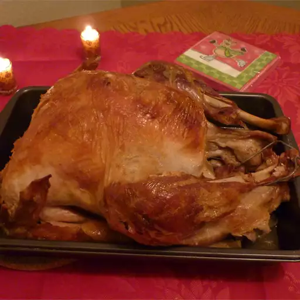

Turkey in a Bag is a foolproof method to achieve a perfectly juicy and
flavorful turkey. This cooking technique involves roasting the turkey
inside a cooking bag, which helps seal in the natural juices and ensures
a moist and tender result. The bag also simplifies the cooking process,
making it an excellent choice for both novice and experienced cooks
alike.
- 1 (12 pound) whole turkey
- salt and ground black pepper to taste
- 2 tablespoons all-purpose flour
- 5 stalks celery, cut into 1-inch pieces
- 2 large onions, quartered
- 1 large turkey bag
- Gather all ingredients.
-
Preheat the oven to 350 degrees F (175 degrees C).
- Remove and discard giblets.
- Rinse turkey and pat dry.
- Season turkey with salt and pepper
-
Sprinkle the bottom of the turkey bag with flour.
-
Place turkey in the bag and add celery and onions.
-
Seal the bag and transfer into a roasting pan; poke several holes in
the bag with a fork.
-
Bake in the preheated oven until turkey is cooked and the juices run
clear, about 3 to 3 1/2 hours. An instant-read thermometer inserted
into the thigh meat should read 180 degrees F (85 degrees C)
- Enjoy!